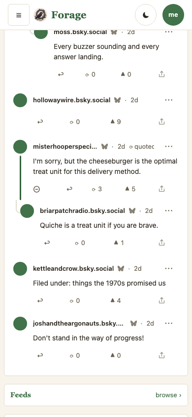
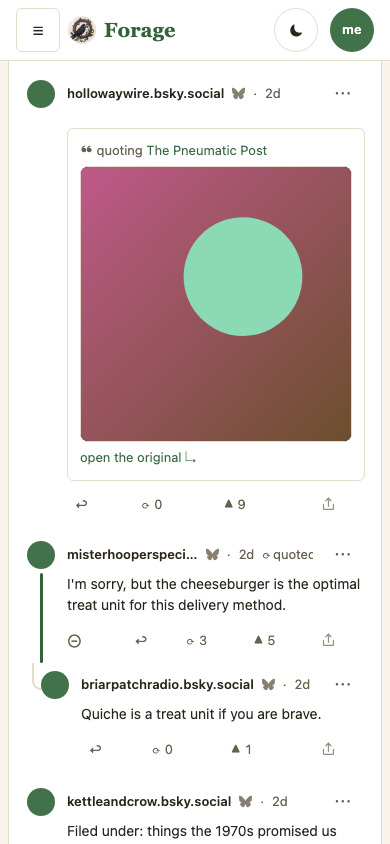
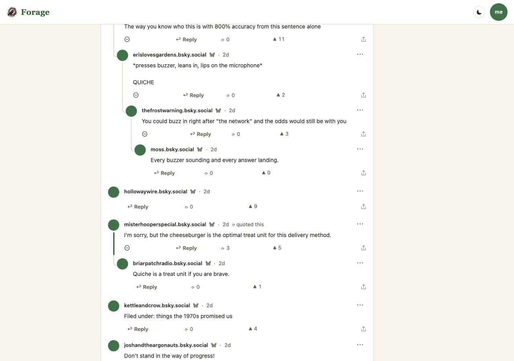
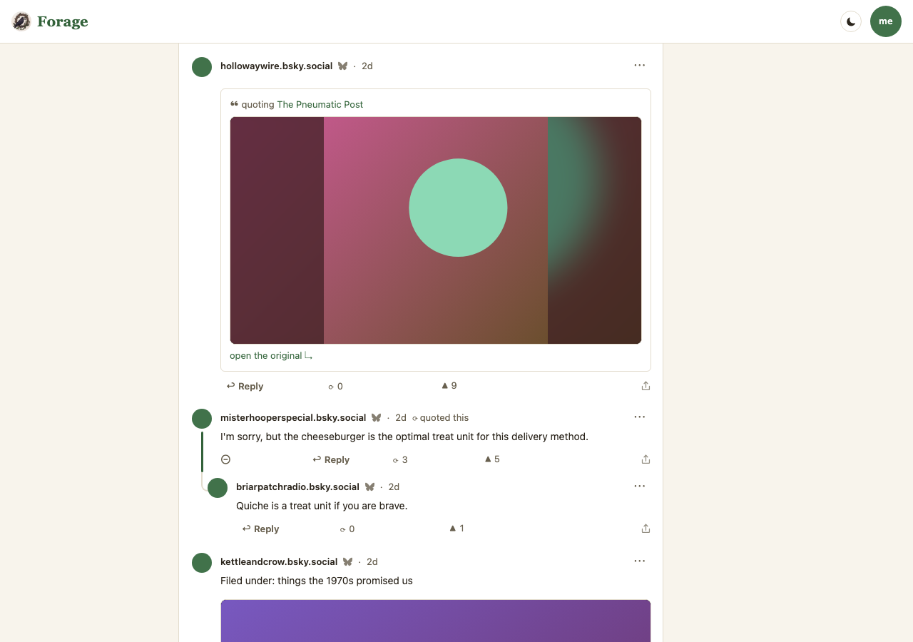

One repair and two open decisions, from the owner’s report on a live thread
(mollyjongfast.bsky.social/post/3mui3vstp3s2e, and hookcity’s reply under it):
“reply with an image that doesn’t load.”
The reply is wordless — its whole content is a quote of somebody else’s picture post.
bsky.app draws the picture. forage.fyi drew a name, a timestamp and an action row over nothing.
The cause was not the picture and not the quote card: the thread’s shaping seam copied a reply’s words and dropped everything else, so no renderer ever had the media or the quoted post to decline. It applied to every embed on every reply in every thread — pictures, video, link cards and quotes alike. With words above it the loss read as a missing picture; with none, as an empty row.
Every frame here is a capture of the engine (MOCKS.md P1): Current is
main at 3345405, Proposed is claude/reply-embeds at
3b2244d, both by scripts/mock-snaps.mjs against
e2e/harness/mock-thread.mjs, in the default skin (rule 4), at 390×844 and
1280×900. Captures live in plans/mocks/snaps/reply-embeds/ (rule 3).
The population grew the load it was missing (P2): it had no replies with embeds at all,
which is why neither the gate nor any earlier mock frame could have shown this. It now carries a
reply with a picture and words above it, and a wordless reply whose whole body is a quote of a
picture post — the reported shape, at the counts a busy thread carries (1,050 likes on the
quoted post, 46 replies, 334 reposts).
| # | Decision | What is built | The alternative |
|---|---|---|---|
| 1 | How tall a reply’s picture is. | The same cap the head post gets (--stage-cap, 520px on desktop, 420px on a
phone). A reply is worth the same as a post; a nested reply’s picture is as large as
the original’s. Visible in the Proposed frames below — the picture is the tallest
thing on the desktop screen. |
A shorter cap for replies, so a thread of picture replies stays scannable. This trades “a reply is worth the same as a post” for “a thread is a conversation, not a gallery.” Say which and it is a one-line change. |
| 2 | The post you are answering, on the /reply page. |
Nothing — deliberately left alone. That card already shows the post’s picture but has never shown what the post quotes. It also clamps the words to four lines, so it is built as a summary, not as a full rendering. | Show the quote card there too, and treat the card as a rendering rather than a summary.
A different question from this repair, which is why it is a decision and not a fix:
it is filed in TODO.md either way. |
Both frames are scrolled to hollowaywire.bsky.social, the reply whose
entire content is a quote of a picture post. In Current it is a byline, an action row, and a gap
where the picture belongs. Below it, kettleandcrow.bsky.social has words and a picture:
Current shows the words alone.




Read decision 1 here. The picture is the tallest element in the Proposed desktop frame. That is the head post’s cap applied to a reply, on purpose — and it is the thing to say “smaller” to if a thread of picture replies should stay scannable.
e2e/render-matrix.workflow.mjs — 17 shapes × 3 surfaces, the
reply node new. Ran red on eleven shapes before the repair.test/lens.test.js — the shaping seam: a reply node carries its media and
its hydrated quoted post; a quote node keeps its media and drops the card. Both proved red
against the pre-repair seam.e2e/mock-thread.workflow.mjs — the population these frames come from is
the population the gate runs, replies with embeds included.node --test 45/45, npm run conformance,
npm run workflows 33 found / 0 failed.